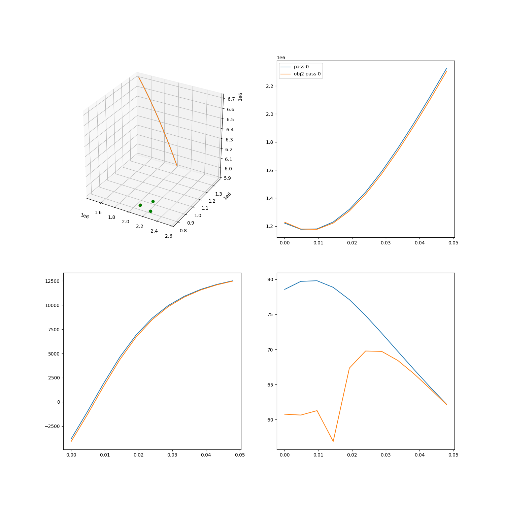

Note
Click here to download the full example code
Observing a set of passes¶

Out:
Space object 1 at epoch 53005.0 MJD:
a : 7.2000e+06 x : -1.2858e+06
e : 1.0000e-01 y : 2.3487e+06
i : 7.5000e+01 z : 6.3831e+06
omega: 0.0000e+00 vx: -2.1177e+03
Omega: 7.9000e+01 vy: -6.8611e+03
anom : 6.2000e+01 vz: 2.8722e+03
PARAMETERS: diameter = 1.000 m, drag coefficient = 2.300, albedo = 1.000, area = 1.000, mass = 1.000 kg
Space object 1 at epoch 53005.0 MJD:
a : 7.2000e+06 x : -1.2822e+06
e : 1.0000e-01 y : 2.3603e+06
i : 7.5000e+01 z : 6.3782e+06
omega: 0.0000e+00 vx: -2.1203e+03
Omega: 7.9000e+01 vy: -6.8563e+03
anom : 6.1900e+01 vz: 2.8852e+03
PARAMETERS: diameter = 1.000 m, drag coefficient = 2.300, albedo = 1.000, area = 1.000, mass = 1.000 kg
Temporal points: 177678
/home/danielk/IRF/IRF_GITLAB/pyant/pyant/coordinates.py:89: RuntimeWarning: invalid value encountered in greater
proj[proj > 1.0] = 1.0
/home/danielk/IRF/IRF_GITLAB/pyant/pyant/coordinates.py:90: RuntimeWarning: invalid value encountered in less
proj[proj < -1.0] = -1.0
/home/danielk/IRF/IRF_GITLAB/SORTS/sorts/passes.py:269: RuntimeWarning: invalid value encountered in less
check_st = zenith_st_ang < 90.0-station.min_elevation
t [s] rx0 az rx0 el rx1 az rx1 el rx2 az rx2 el Controller Target
---------- -------- -------- --------- -------- -------- -------- ------------ -------------
0.121569 197.474 65.9274 234.03 68.8498 207.847 79.3235 Tracker Cool object 1
17.3843 176.763 75.5348 246.327 80.3558 93.1826 86.6998 Tracker Cool object 1
34.6471 121.589 79.5101 -3.10424 85.1945 52.1564 75.8544 Tracker Cool object 1
51.9099 78.9954 73.1544 31.5689 74.8089 47.5907 65.3995 Tracker Cool object 1
69.1727 64.3514 64.2536 37.3004 64.7143 45.927 56.4595 Tracker Cool object 1
86.4354 57.9795 56.0013 39.6117 56.0379 45.0899 49.02 Tracker Cool object 1
103.698 54.5217 48.9137 40.8789 48.7854 44.6014 42.871 Tracker Cool object 1
120.961 52.3794 42.9529 41.6929 42.7641 44.2923 37.7659 Tracker Cool object 1
138.224 50.9354 37.9491 42.2699 37.7442 44.0879 33.4844 Tracker Cool object 1
155.487 49.9048 33.7204 42.7075 33.5188 43.9497 29.8482 Tracker Cool object 1
172.749 49.1385 30.1096 43.0564 29.9189 43.8562 26.7188 Tracker Cool object 1
-------------------------------------- Performance analysis -------------------------------------
Name | Executions | Mean time | Total time
--------------------------------------------------------+--------------+-------------+--------------
Obs.Param.:calculate_observation:get_state | 3 | 0.00478069 | 7.17 %
Obs.Param.:calculate_observation:enus,range,range_rate | 3 | 0.000438293 | 0.66 %
Obs.Param.:calculate_observation:snr-step:gain | 30 | 0.00549881 | 82.51 %
Obs.Param.:calculate_observation:snr-step:snr | 30 | 2.79506e-05 | 0.42 %
Obs.Param.:calculate_observation:snr-step | 30 | 0.00554674 | 83.23 %
Obs.Param.:calculate_observation | 3 | 0.066549 | 99.86 %
total | 1 | 0.199928 | 100.00 %
-------------------------------------------------------------------------------------------------
import pathlib
from tabulate import tabulate
import numpy as np
import matplotlib.pyplot as plt
import sorts
eiscat3d = sorts.radars.eiscat3d
from sorts.controller import Tracker
from sorts.scheduler import StaticList, ObservedParameters
from sorts import SpaceObject
from sorts.profiling import Profiler
from sorts.propagator import SGP4
Prop_cls = SGP4
Prop_opts = dict(
settings = dict(
out_frame='ITRF',
),
)
prop = Prop_cls(**Prop_opts)
objs = [
SpaceObject(
Prop_cls,
propagator_options = Prop_opts,
a = 7200e3,
e = 0.1,
i = 75,
raan = 79,
aop = 0,
mu0 = mu0,
mjd0 = 53005.0,
d = 1.0,
)
for mu0 in [62.0, 61.9]
]
for obj in objs: print(obj)
t = sorts.equidistant_sampling(
orbit = objs[0].orbit,
start_t = 0,
end_t = 3600*6,
max_dpos=1e3,
)
print(f'Temporal points: {len(t)}')
states0 = objs[0].get_state(t)
states1 = objs[1].get_state(t)
#set cache_data = True to save the data in local coordinates
#for each pass inside the Pass instance, setting to false saves RAM
passes0 = eiscat3d.find_passes(t, states0, cache_data = False)
passes1 = eiscat3d.find_passes(t, states1, cache_data = False)
#just create a controller for observing 10 points of the first pass
ps = passes0[0][0][0]
use_inds = np.arange(0,len(ps.inds),len(ps.inds)//10)
e3d_tracker = Tracker(radar = eiscat3d, t=t[ps.inds[use_inds]], ecefs=states0[:3,ps.inds[use_inds]])
e3d_tracker.meta['target'] = 'Cool object 1'
class MyStaticList(StaticList, ObservedParameters):
def __init__(self, radar, controllers, profiler=None, logger=None):
super().__init__(
radar=radar,
controllers=controllers,
profiler=profiler,
logger=logger,
)
def generate_schedule(self, t, generator):
data = np.empty((len(t),len(self.radar.rx)*2+1), dtype=np.float64)
data[:,0] = t
names = []
targets = []
for ind,mrad in enumerate(generator):
radar, meta = mrad
names.append(meta['controller_type'].__name__)
targets.append(meta['target'])
for ri, rx in enumerate(radar.rx):
data[ind,1+ri*2] = rx.beam.azimuth
data[ind,2+ri*2] = rx.beam.elevation
data = data.T.tolist() + [names, targets]
data = list(map(list, zip(*data)))
return data
p = Profiler()
scheduler = MyStaticList(radar = eiscat3d, controllers=[e3d_tracker], profiler=p)
sched_data = scheduler.schedule()
rx_head = [f'rx{i} {co}' for i in range(len(scheduler.radar.rx)) for co in ['az', 'el']]
sched_tab = tabulate(sched_data, headers=["t [s]"] + rx_head + ['Controller', 'Target'])
print(sched_tab)
p.start('total')
data0 = scheduler.observe_passes(passes0, space_object = objs[0], snr_limit=False)
p.stop('total')
print(p.fmt(normalize='total'))
data1 = scheduler.observe_passes(passes1, space_object = objs[1], snr_limit=False)
#create a tdm file example
# pth = pathlib.Path(__file__).parent / 'data' / 'test_tdm.tdm'
# print(f'Writing TDM data to: {pth}')
# dat = data0[0][0][0]
# sorts.io.write_tdm(
# pth,
# dat['t'],
# dat['range'],
# dat['range_rate'],
# np.ones(dat['range'].shape),
# np.ones(dat['range_rate'].shape),
# freq=eiscat3d.tx[0].beam.frequency,
# tx_ecef=eiscat3d.tx[0].ecef,
# rx_ecef=eiscat3d.rx[0].ecef,
# tx_name="EISCAT 3D Skiboten",
# rx_name="EISCAT 3D Skiboten",
# oid="Some cool space object",
# tdm_type="track",
# )
fig = plt.figure(figsize=(15,15))
axes = [
[
fig.add_subplot(221, projection='3d'),
fig.add_subplot(222),
],
[
fig.add_subplot(223),
fig.add_subplot(224),
],
]
for tx in scheduler.radar.tx:
axes[0][0].plot([tx.ecef[0]],[tx.ecef[1]],[tx.ecef[2]], 'or')
for rx in scheduler.radar.rx:
axes[0][0].plot([rx.ecef[0]],[rx.ecef[1]],[rx.ecef[2]], 'og')
for pi in range(len(passes0[0][0])):
dat = data0[0][0][pi]
dat2 = data1[0][0][pi]
if dat is not None:
axes[0][0].plot(states0[0,passes0[0][0][pi].inds], states0[1,passes0[0][0][pi].inds], states0[2,passes0[0][0][pi].inds], '-', label=f'pass-{pi}')
axes[0][1].plot(dat['t']/3600.0, dat['range'], '-', label=f'pass-{pi}')
axes[1][0].plot(dat['t']/3600.0, dat['range_rate'], '-', label=f'pass-{pi}')
axes[1][1].plot(dat['t']/3600.0, 10*np.log10(dat['snr']), '-', label=f'pass-{pi}')
if dat2 is not None:
axes[0][0].plot(states1[0,passes1[0][0][pi].inds], states1[1,passes1[0][0][pi].inds], states1[2,passes1[0][0][pi].inds], '-', label=f'obj2 pass-{pi}')
axes[0][1].plot(dat2['t']/3600.0, dat2['range'], '-', label=f'obj2 pass-{pi}')
axes[1][0].plot(dat2['t']/3600.0, dat2['range_rate'], '-', label=f'obj2 pass-{pi}')
axes[1][1].plot(dat2['t']/3600.0, 10*np.log10(dat2['snr']), '-', label=f'obj2 pass-{pi}')
axes[0][1].legend()
plt.show()
Total running time of the script: ( 0 minutes 19.758 seconds)